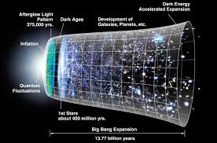

Teoría 1: El Big Bang

¿Qué dice esta teoría?
La teoría del Big Bang explica que el universo comenzó hace aproximadamente 13.8 mil millones de años a partir de un estado extremadamente caliente y denso. Desde ese momento el espacio comenzó a expandirse, formando la materia, las estrellas, las galaxias y eventualmente los planetas.
Evidencia científica
Los científicos han encontrado varias evidencias importantes que apoyan esta teoría, como la expansión del universo observada por los telescopios y la radiación de fondo de microondas, considerada un "eco" del universo temprano.
Pregunta abierta
Aunque el Big Bang explica muy bien cómo evolucionó el universo, los científicos aún investigan qué ocurrió exactamente antes de ese momento inicial.